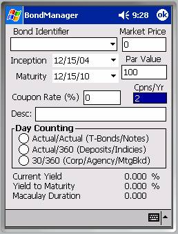
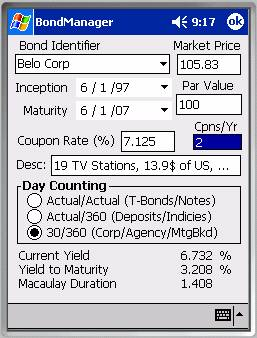

Bond Definition DialogThe Bond Definition Dialog operates analogously to the Stock Definition Dialog and is affected by the same preferences that affect database updates in the Stock Definition Dialog. The bond identifier is a combo-box with the same behaviors as the stock symbol combo-box. The Bond Definition Dialog includes controls for entering a bond symbol, the bond’s current market price, its par value, maturity date, coupon rate, number of coupons per year, etc. The Bond Definition Dialog imports the Current Yield, Yield to Maturity, and Macaulay Duration from the Bond Analyzer, but we’ll get to those later.
Refer to the Symbol / Identifier discussion in the Instrument Definitions section above.
Market price and par value are currency denominated, single precision values.
The bond’s ‘Dated Date’ is called its inception in NillaHedge. The date of a bond’s first coupon is usually half a year after the bond’s inception date (for a ‘normal’ bond paying two coupons per year). NillaHedge calculates coupon dates backwards from the given maturity date. The bond’s maturity date usually coincides with the last coupon date, but in some cases, there may be slight differences between the bond’s official settlement date and the date of its final coupon. To ensure accurate income calculations, you should set the maturity date to the bond’s final coupon date.
Accurate coupon income calculations also depend on the inception date. For NillaHedge the inception date specifies the date before which no coupons are paid, so it need only include the bond’s first coupon date to ensure accurate income accounting. Beware that setting the inception date sufficiently early or the maturity date sufficiently late could infer the existence of ‘ghost’ coupons. NillaHedge will analyze any sort of bond you can define in the dialog, but if you’re interested in accurate accounting, you’ll probably want to avoid bestowing your portfolio with ghost coupons. Even if your mail is delivered by Ghost Riders Express, which frankly, has the world’s ghastliest delivery record, you’ll still face considerable difficulties depositing those ethereal coupons in your local bank.
Only two digits of the inception and maturity date years are displayed, but each date has four significant digits, so you should be careful about just typing over the two visible digits. For example, where 1997 is represented by 97, typing over 97 with 07 will get you 1907, not 2007. You can verify what the control actually contains, by using its drop-down arrow to inspect the full calendar.

The annual rate at which a coupon bond produces income is given by the coupon rate. The annual coupon rate is divided among the coupons specified. Each coupon is paid in the amount of the coupon rate times the par value divided by the number of coupons per year. The vast majority of bonds pay coupons twice per year (the default), so a coupon bond with a quoted rate of 8% will have two annual coupons, each amounting to 4% of the par value.Setting the coupon rate to 0% or setting the number of coupons per year to zero are both effective means of modeling a zero-coupon bond. Conversely, coupon bonds will pay a nonzero percentage of the par value and have at least one coupon per year.
Finally, regarding data entry, a complete bond definition will specify the type of day counting used by the bond. Bonds have a long history, preceding computers and hand calculators. Prior to ubiquitous computing power, accurately computing accrued interest using the actual number of days in a month or year literally represented more computing effort than the extra accuracy was worth, so simplifying conventions crept in, and some are still with us.
Corporate, agency, and mortgage backed securities stuck with the concept that all months have thirty days and daily interest is the quoted annual interest rate divided by 360 - a day counting method called 30/360. Certificates of deposit and various interest rate indexes favor using the actual number of days in each month, but have retained 30/360’s daily rate calculation – a day counting method called Actual/360. Finally, Actual/Actual day counting is most often employed for Treasury bonds and similar notes. Actual/Actual daily interest is the quoted annual rate divided by 365 or 366, depending on whether the day in question is within a normal or a leap year.[1]
Having specified the relevant values above, the current yield, yield-to-maturity, and Macaulay duration are displayed. Current yield expresses the ratio of the coupon amount to the current market value of the bond. Yield to maturity is the interest rate which when applied to the bond’s par value and all of its coupons will result in the current market value of the bond. Macaulay duration remaps a coupon bond’s maturity to where it would be if it were a zero-coupon bond paying with the computed yield-to-maturity.[2]